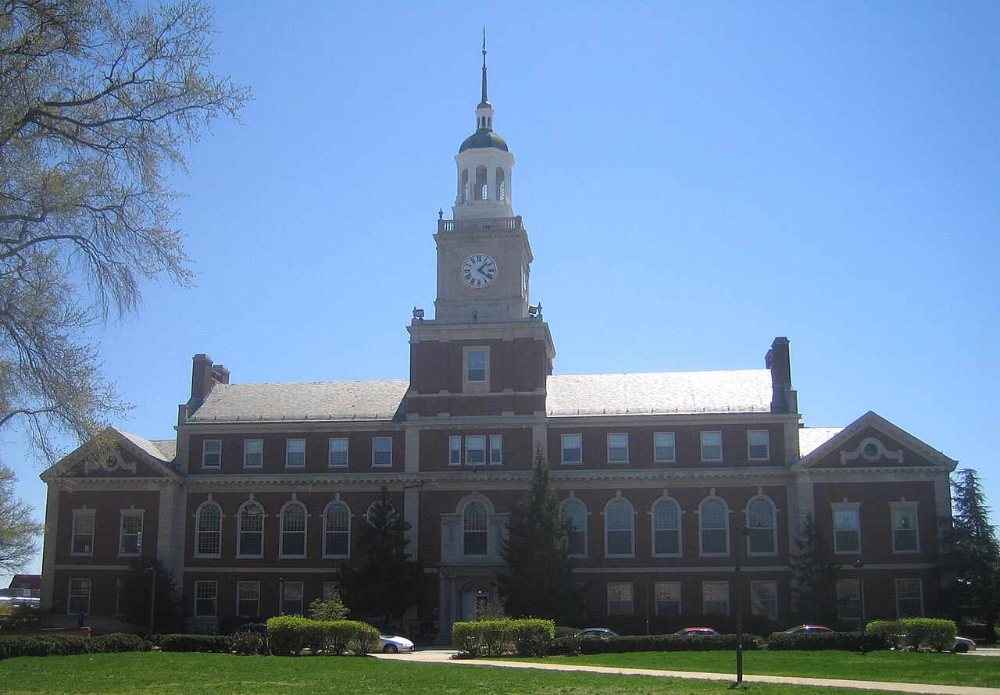

Howard University Founders Library
Photo: D Monack at English Wikipedia (via Wikimedia Commons) · Public domain · Commons
Photo: D Monack at English Wikipedia (via Wikimedia Commons) · Public domain · Commons

Hillman is fictional. These are real campuses of the kind the original was built from — the show was inspired by student life at historically Black colleges and universities.